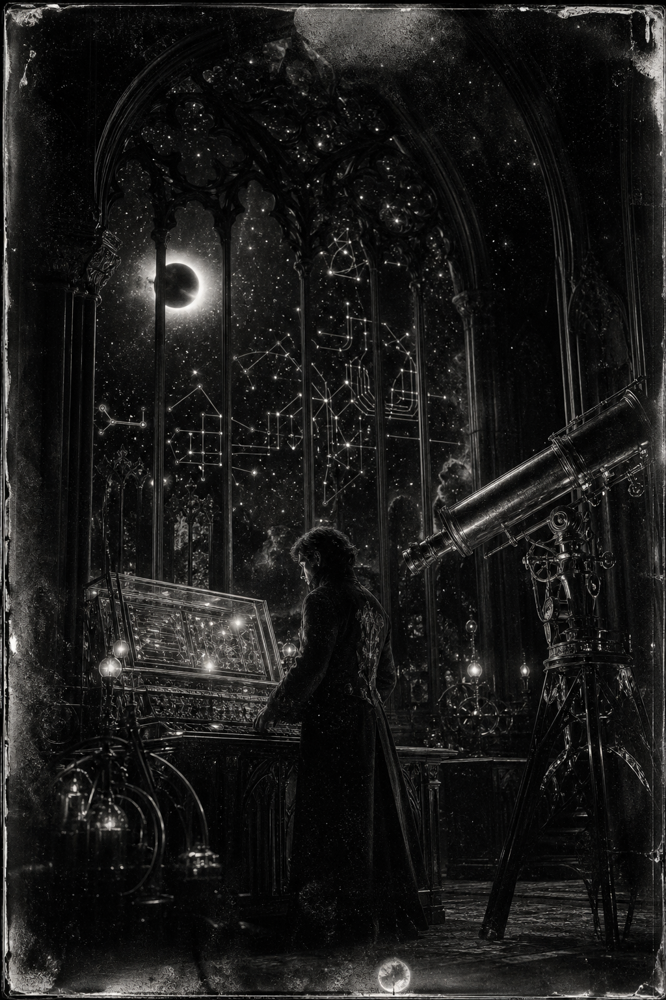

Morning Edition
6:00 AM CDTFinance & Markets
Warsh Cools the Tape
Wall Street faded into the Labor Day weekend after Fed Chair Kevin Warsh used Jackson Hole to keep inflation, not rate cuts, at the center of the frame. The S&P 500 closed Friday at 7,711.76, down 0.25%. The Nasdaq slipped 0.52% to 26,402.42. The Dow barely moved, finishing at 53,559.99. Nvidia gave back about 5% even after this week's blowout print. The week still finished green: S&P +0.63%, Dow +0.6%, Nasdaq +1.3%.
Source: Goodreturns and The Economic Times, August 28–29, 2026Private Capital Is Asked to Drill
President Trump called Friday's Venezuela announcement "the biggest oil deal in world history," saying the United States would take control of 65 billion barrels of reserves. Secretary of State Marco Rubio said the pact would usher in $100 billion of private investment. The White House did not name the partners. Gas still averaged about $4.09 a gallon, and ExxonMobil's Darren Woods had previously called the country "un-investable." Markets are closed until Tuesday.
Source: The Hindu, August 29, 2026Earnings Season Leaves a High Watermark
Charles Schwab counts 485 of the S&P 500 already reported: 69% beat on revenue, 88% on the bottom line, with EPS growth tracking near 52% and revenue near 15%. Strip one-time mega-cap investment gains and the earnings run-rate is still 26–29%. The factory is loud. The Fed is watching commodity prices, not the applause.
Source: Goodreturns / Charles Schwab, August 29, 2026World & US
Nepal's Flood Toll Climbs Past 570
Nepal Police put Friday's death toll at 579, with nearly 2,000 still missing after an ice-and-rock collapse sent a debris surge down the Lhende, Bhotekoshi, and Trishuli rivers. More than 4,500 people have been rescued. The Nepal Tourism Board said 98 of 183 missing Indian tourists remain unaccounted for, along with 65 Americans and citizens of more than 30 countries. Kathmandu reversed course and will now accept limited foreign specialists for tunnel rescue, DNA, and forensics.
Source: The Hindu and The Hindu Morning Digest, August 28–29, 2026Oslo Begins a New Reign
Norway woke to mourning after King Harald V died Friday at 89. Crown Prince Haakon, 53, succeeds him. The palace said Harald died peacefully at Oslo University Hospital after treatment for haemolytic anaemia and a later infection. Europe's oldest reigning monarch spent 35 years modernizing a people's monarchy; the council of state now belongs to his son.
Source: BBC News, August 28, 2026A Judge Throws Out the 9/11 Confessions
A U.S. military judge ruled Friday that confessions alleged 9/11 mastermind Khalid Sheikh Mohammed made to FBI agents are inadmissible, The New York Times reported. The decision lands weeks before the 25th anniversary of attacks that killed nearly 3,000 people. Prosecutors now face a thinner case as the calendar turns toward September.
Source: The Hindu / The New York Times, August 29, 2026
The Saturday Observatory: the wizard does not chase every interrupt. He sets the pace, aims the glass, and waits for the fairing to open.
"Pace is a compile flag. Set it before the rest of the flags."- The Developer's Almanac
Sagittarius Horoscope
Justin, Mars rattles the nervous system while the Moon keeps extra tabs open. News18 sees fresh momentum if you talk clearly; Times of India says the day holds if you refuse the shortcut. In developer language: do not context-switch yourself into a kite with too many strings. Open one failing test, land one verified hunk, then take the walk. Your Rat-year ingenuity compounds when Saturn's labor is paced, not sprinted. Keep the voice warm after a long compile. Lucky hex: #1e4d7b. Lucky command: git add -p.
Tech, AI, Space & Crypto
-
Roman's Window Opens Tomorrow
NASA and SpaceX are targeting 7:26 a.m. EDT Sunday for the Nancy Grace Roman Space Telescope on a Falcon Heavy from Pad 39A. Coverage starts at 6:20 a.m. The $4.3 billion observatory is nearly nine months early. Today is the science briefing and prelaunch news conference. Tomorrow the fairing leaves Florida for L2.
Source: NASA and SpaceNews, August 24–29, 2026 -
Chips Gave Back the Cheer
Nvidia dropped about 5% Friday even after the $96 billion quarter. Marvell fell more than 10% despite a beat and a raised outlook. AMD slipped more than 2%, Broadcom nearly 1%. Meta, Amazon, Microsoft, and Alphabet limited the damage. The lesson is old: guidance is not a price.
Source: Goodreturns, August 29, 2026 -
Bitcoin Lost the $80,000 Handle
Bitcoin traded Saturday near $77,500–$77,800 after slipping the round number Warsh helped knock loose. Spot ETF inflows had been a supporting current earlier in the week. The cleaner signal is the lost handle: risk assets are pricing a tighter September while the tape is closed.
Source: YCharts BTC and Investing.com, August 29, 2026 -
Saturday Is a Science Briefing
At 9 a.m. EDT, NASA walks the press through Roman's surveys. At 10:30 a.m., the prelaunch conference. Administrator Jared Isaacman may fly past the stacked Falcon Heavy at 11:45 a.m. if weather allows. The public can still register as virtual guests.
Source: NASA, August 24, 2026 -
A Wide Field Needs a Steady Hand
Roman's 300-megapixel infrared camera will see at least 100 times more sky than Hubble in one shot. Dark energy, dark matter, and a census of worlds are the brief. Complex things rarely land early. This one did. Match that energy without matching the haste.
Source: SpaceNews, August 29, 2026
Morning Compile
- Warsh is the interrupt; the weekend is the cooldown.
- Private capital is being asked to rebuild a map, not a mood.
- Roman flies at 6:26 a.m. Chicago time Sunday. Watch if you can.
- Do one verified change. Pace is the passing suite, not the sprint.